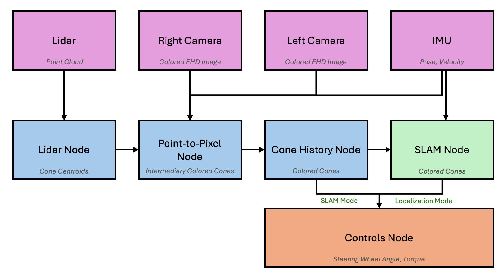

Software Architecture
Our autonomous system operates on Ubuntu 20.04 with ROS2 Foxy. Our pipeline uses a distributed node-based approach where individual components communicate through the ROS2 middleware, enabling scalable and maintainable system design.
System Overview
{kind=link}
Node Architecture
Our software follows the standard ROS2 publisher-subscriber communication pattern:
Publishers
Sensor nodes publish raw data to specific topics
Processing nodes publish filtered/processed data
Control nodes publish command messages
Subscribers
Processing nodes subscribe to sensor data topics
Decision-making nodes subscribe to processed data
This decoupled architecture allows nodes to be developed, tested, and deployed independently while maintaining system-wide coordination.
Startup Procedure
The system launches automatically when the vehicle’s low voltage (LV) system powers the compute unit:
Power-On: LV system activates, powering the compute
Boot Sequence: Ubuntu 20.04 loads and initializes
CRON Launch: System startup triggers CRON job on @reboot
TMUX Session: Main software pipeline launches within a persistent TMUX session
Node Initialization: All ROS2 nodes start in predetermined order
System Ready: Heartbeat monitoring begins once all nodes are active
The CRON job ensures the system launches reliably without manual intervention, while TMUX provides session persistence and easy debugging access.
Heartbeat System
A dedicated heartbeat monitor ensures system reliability by continuously checking node health:
Monitoring Cycle
Heartbeat pulses every 5 seconds
Checks for node presence in ROS2 graph
Verifies active publishing on expected topics
Restarts failed nodes automatically
Pseudocode Reference
HEARTBEAT MONITOR:
REPEAT every 5 seconds:
FOR each critical node:
IF node does not exist in ROS2 graph:
Log error message
Restart the node
Continue to next node
FOR each expected topic from this node:
IF topic is not publishing data:
Log error message
Restart the node
Break out of topic loop
Log "All nodes healthy" message
RESTART NODE PROCEDURE:
Log restart message
Kill the node process
Wait 2 seconds for cleanup
Launch the node again
CHECK NODE EXISTS:
Get list of all active nodes
Return true if node name is in the list
CHECK TOPIC PUBLISHING:
Echo topic to see if it has received messages recently
Return true if message rate is greater than 0
This monitoring system ensures high availability and automatic recovery from node failures, critical for autonomous start up.